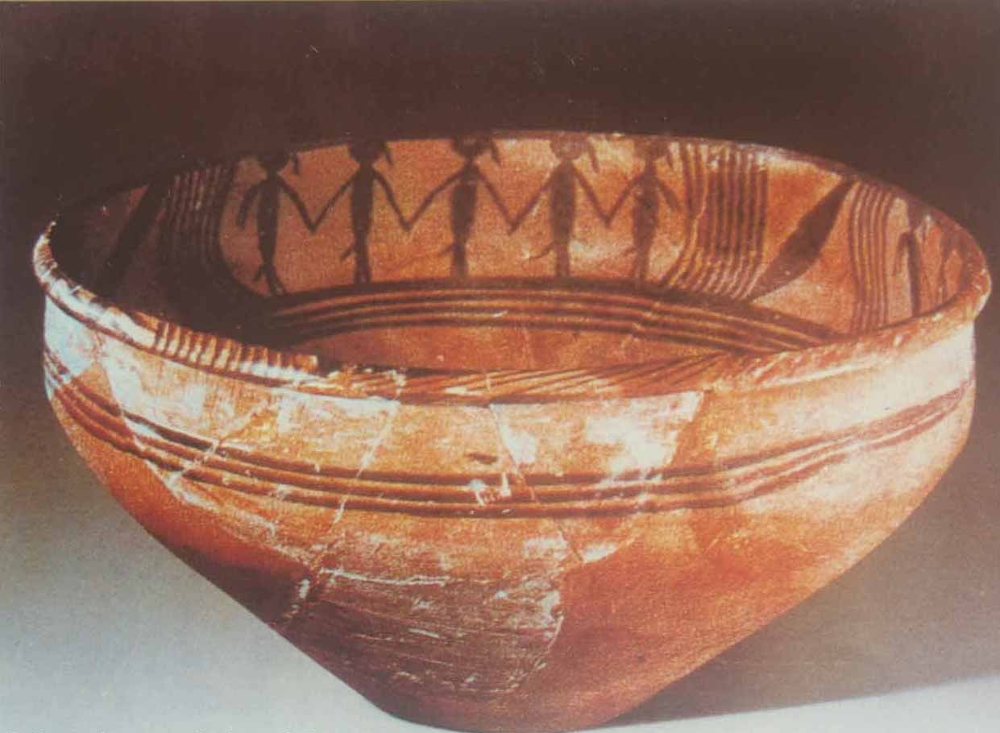

In the Ancient Rome, there was a dish similar to the lasagne called lasana or lasanum (Latin word for "container", "pot") described in the book “De re coquinaria” by Marcus Gavius Apicius, but the word could have a more ancient origin. The first theory is that lasagne comes from Greek λάγανον (laganon), a flat sheet of pasta dough cut into strips. The word λαγάνα (lagana) is still used in Greek to mean a flat thin type of unleavened bread baked for the Clean Monday holiday.
Another theory is that the word lasagne comes from the Greek λάσανα (lasana) or λάσανον (lasanon) meaning "trivet or stand for a pot", "chamber pot". The Romans borrowed the word as "lasanum", meaning "cooking pot" in Latin. The Italians used the word to refer to the dish in which lasagne is made. Later the name of the food took on the name of the serving dish.
A third theory proposed that the dish is a development of the 14th century English recipe "Loseyn" as described in “The Forme of Cury”, a cook book in use during the reign of Richard II. This has similarities to modern lasagne in both its recipe, which features a layering of ingredients between pasta sheets, and its name. An important difference is the lack of tomatoes, which did not arrive in Europe until after Columbus reached America in 1492. The earliest discussion of the tomato in European literature appeared in a herbal written in 1544 by Pietro Andrea Mattioli while the earliest discovered cookbook with tomato recipes was published in Naples in 1692, though the author had apparently obtained these recipes from Spanish sources.